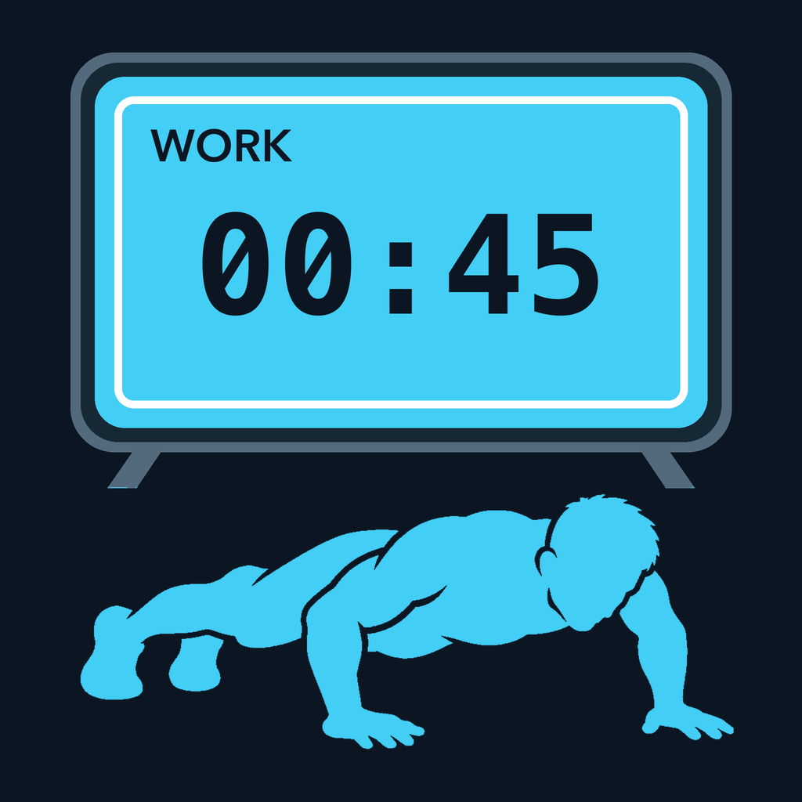

Available now
PRODUCT / 01
Easy MD
A fast, private Markdown reader for iPhone. Browse the folders you choose, read with focus, and listen on device—without a vault or full-library index.
- Read-only by design
- iCloud Drive folders
- Version 1.3.1
Independent product lab · Hong Kong
We turn specific, everyday frustrations into focused products—without the extra layers that get in the way.
Meet the productsPRODUCT / 01
A fast, private Markdown reader for iPhone. Browse the folders you choose, read with focus, and listen on device—without a vault or full-library index.
PRODUCT / 02
An iPhone squat-depth judge for wall-ball training, with live VALID or NO REP feedback. Version 1.0.2 is currently in App Review.

Available · v1.0.1PRODUCT / 03
An iPad-first class timer for coaches. Set up a group workout, place the shared countdown where the class can see it, and focus on coaching.
Avocado Lab is an independent product lab based in Hong Kong. We design software around a clear job, a calm experience, and honest boundaries.
That means local-first where it matters, no account unless one is truly needed, and product pages that say what is available now.